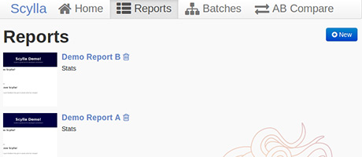
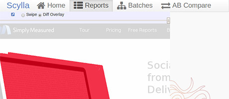
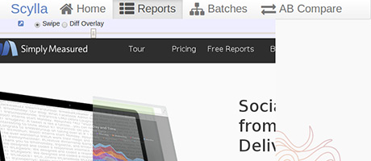

{kind=link}
-
Who Uses This Shit?
Developers
As a Developer, Scylla can serve as the first line of testing.
- Run it immediately after a change, and Scylla will allow you to immediately ensure that things changed as planned.
- Run after a refactor, it will allow you to be certain things remained the same.
Quality & Ops
Quality and Ops’ focus on the end-user experience often means that they want to be notified immediately of anything that may negatively impact the user.
- The built-in scheduling lets you capture screens independent of builds, ensuring that even out-of-process changes don’t go unnoticed. (like third-party CDNs, generated content, etc)
- A simple API allows automated tools to generate new screenshots.
-
Automating Reports
The real value of Scylla is its ability to automate the visual testing. By setting up a batch of reports, you can run multiple reports at once, and even schedule the reports to run in the morning. If you add your email address as a “Watcher” on a batch, you’ll get a summary email after each scheduled run, a handy piece of news to greet you first thing in the morning.
-
Capturing Screenshots
Master Reports
Reports allow you to track a single URL over time. After you create a report, Scylla will immediately capture a screenshot and compare it against future snapshots.
A–B Compare
Compare allows you to track the differences between
two separate URLs. This is great when trying to
compare a local version to a server version of a site.
-
Visual Differentials
Overlay
Generate an image with all pixels that have changed in
red. This is overlayed on top of the new image so you
can quickly see exactly which pixels have changed.Swipe
Use Swipe to slide a vertical seam between the images
to see tiny adjustments in height or color that
would be impossible to notice without such a tool.
{kind=link}
{kind=link}
{kind=link}